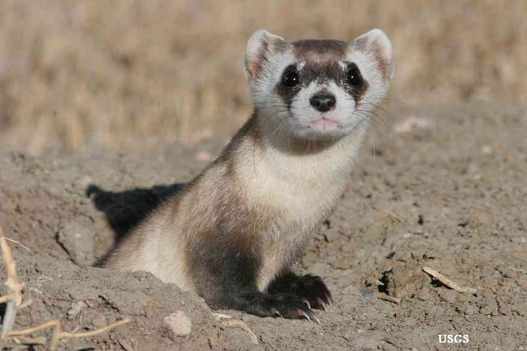
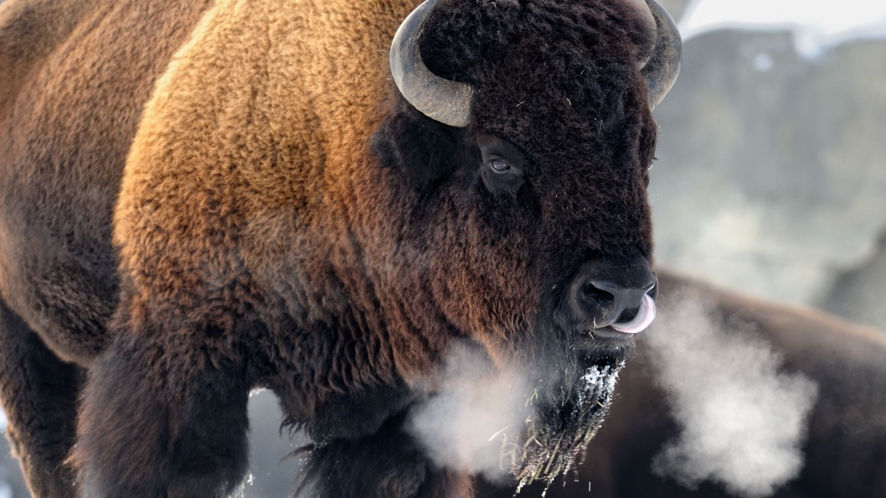
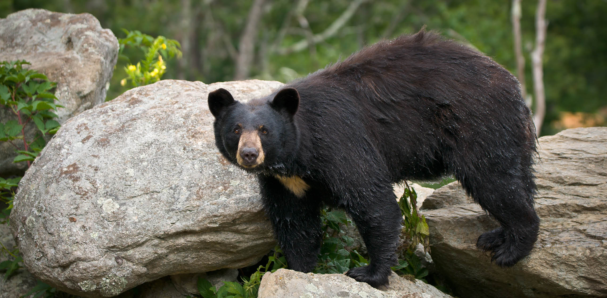

|  |
Black Footed FerretThe black-footed ferret, also known as the American polecat or prairie dog hunter, is a species of mustelid native to central North America. The black-footed ferret is roughly the size of a mink and is similar in appearance to the European polecat and the Asian steppe polecat. |
|  |
American BisonThe American bison is a species of bison native to North America. Sometimes colloquially referred to as American buffalo or simply buffalo, it is one of two extant species of bison, alongside the European bison. |
|  |
American Black BearThe American black bear, also known as the black bear or sometimes baribal, is a medium-sized bear endemic to North America. It is the continent's smallest and most widely distributed bear species. American black bears are omnivores, with their diets varying greatly depending on season and location. |